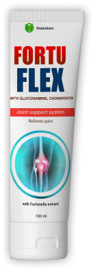
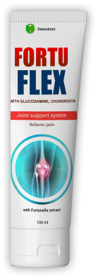

La crema Fortuflex es eficaz en el tratamiento y prevención de enfermedades de la columna y las articulaciones. tales como: osteocondrosis, hernias intervertebrales, radiculitis discogénica, osteoartritis, osteoartritis, contracturas articulares. Fortuflex alivia el dolor en columna vertebral y articulaciones, detiene los procesos inflamatorios, promueve la regeneración de los discos intervertebrales y el tejido del cartílago, mejora la microcirculación en los tejidos.
El efecto se nota después de la primera aplicación. El uso regular de la crema ayuda a detener la progresión de enfermedades del sistema musculoesquelético.
 

 IMPACTO INTEGRADO
IMPACTO INTEGRADO
 SOLO COMPONENTES NATURALES
SOLO COMPONENTES NATURALES
 EFICIENCIA
EFICIENCIA
 RECOMENDADO POR ESPECIALISTAS
RECOMENDADO POR ESPECIALISTAS


 ¿Como pagar?
¿Como pagar?
 ¿Como ordenar?
¿Como ordenar?
 ¿Hay entrega?
¿Hay entrega?
La crema Fortuflex actúa de forma suave y al mismo tiempo rápida: sus principios activos se absorben rápidamente y tienen un efecto específico sobre las lesiones de las articulaciones y la columna vertebral. Se lo recomiendo a pacientes que estén tratados con osteocondrosis, osteoporosis, dolores articulares e incluso lesiones. Fortuflex alivia rápidamente el dolor, la hinchazón y la inflamación, desencadena procesos regenerativos con el uso regular y le permite volver a la vida normal sin dolor. La crema también es eficaz para las enfermedades relacionadas con la edad, yo mismo la uso para la osteocondrosis.
Pedro Gutierres Traumatólogo, cirujano